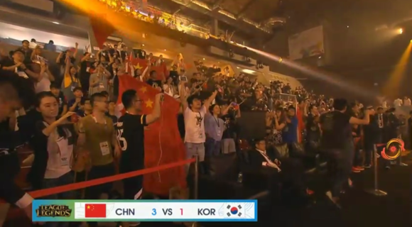

中国团队3:1击败韩国团队成功夺冠!收获亚运会LOL项目首枚金牌!
阅读：36k · 我家猫不吃桔子 · 发布于5小时前
电竞
游戏
亚运会

第一局：中国中野一扫颓势疯狂带节奏 韩国队大龙毁一生输掉首局
中国队在首局放弃了小组赛对抗韩国队的对位战术，将战术核心转移到下路身上，中路Xiye（苏汉伟）选择了璐璐作为中路英雄，不但打出了更好的效果，而且在前期中野对抗中占尽优势。前期的对抗节奏中，由中国队拿到一血，但双方经济和节奏始终处于持平状态，比赛的转折点发生在中期，中国队在野区开到韩国队打野辅助，顺利拿下大龙，经济反超。随后中国的推进被韩国队打出二换五，比赛再次僵持。随后韩国队强行开大龙，被爆炸输出的Uzi（简自豪）击溃，被一波推平基地，中国队在决赛对决中先下一城。
第二局：前期爆炸节奏被韩国队伍拖住 Faker（李相赫）加里奥盘活全场击败中国队
韩国队在第二局拿出了加里奥千珏体系，另外用上单慎作为支援的利器，而失去璐璐的中国队只能选择了用刀妹来对抗Faker的成名加里奥。在前期中国队疯狂针对下路，企图帮下路建立优势，而双方你来我往经济一直没有被拉开，虽然在人头数上有优势，但小龙全被韩国队拿到。中上虽帮助下路建立了优势，但韩国队扎实的保AD体系让中国队中后期毫无办法。在中期一波团战，中国队被打出0换4丢掉大龙，拿到三条火龙的韩国队令中国队无力抵抗，缺少AOE伤害的中国队最终被韩国队击溃，遗憾输掉第二局比赛。
第三局：中国保狗战术显奇效 爆炸肥无解Uzi击溃韩国
韩国队出人意料的Ban掉了加里奥，选择了佐伊成为中单首发，而Xiye则选择熟练度很高的卡萨丁作为应对，Uzi使用了自保能力较强的霞作为对抗维鲁斯选择，双方阵容各有优劣，临场发挥将是决定胜负的关键。
在一级韩国下路双人组侵扰中国野区，AD被逼出闪现，随后中国队利用闪现CD时间拿下韩国队AD一血，并多次针对下路滚雪球，帮助Uzi建立巨大优势。
凭借Uzi的爆炸输出，韩国队无力抵抗，在双杀韩国下路双人组后，中国队拿到大龙，正式进入推进节奏。在卡萨丁和牛头击杀Faker的佐伊后，韩国队被中国队抱团拿下中下两路水晶，33分钟Uzi霞已经6神装，输出碾压的中国队最终靠着Uzi的霞击败韩国队，拿下赛点，值得一提的是，霞整局都没有用过大招。
第四局：小花生临危受命扔难救主 中国队几何开团击溃韩国夺金牌
中国队抢下加里奥，不给Faker拿下的机会，Faker反手拿下发条作为支撑团队的核心，在前期由于酒桶E闪逼吊Faker召唤师技能，在没有闪现CD时被韩国打野抓到机会，拿下酒桶一血。
而中国队下路始终是团队的支撑点，在8分钟时Uzi打出精彩击杀，扼杀了韩国队下路和平发育的想法。由于小花生良好的发育，野区对抗盲僧始终处于不利地位，被连续击杀两次后，节奏开始在韩国队手中。在双方互换资源中，两队各有所得，韩国队的中野成为中国队最大的威胁。
在22分钟后，中国队下路双人组在中路河道击杀韩国队下路双人组，随后上路纳尔单杀奥拉夫，中国队大龙逼团击杀剩余韩国两名队员，随后拿下大龙。由于阵型不佳第一波攻势被韩国队拖住，在第二条大龙刷新后，中国队野辅完美配合开到Faker，再次拿下第二条大龙。
在高地附近，野辅再现神奇魔术式开团，秒掉Faker后成功推掉中路水晶，一波未果整合状态后，在上路高地再次故技重施，开到Faker，气势如虹的中国队一波击败了韩国队，为中国拿下了本次亚运会电竞表演赛宝贵的金牌。
第一局：中国中野一扫颓势疯狂带节奏 韩国队大龙毁一生输掉首局
中国队在首局放弃了小组赛对抗韩国队的对位战术，将战术核心转移到下路身上，中路Xiye（苏汉伟）选择了璐璐作为中路英雄，不但打出了更好的效果，而且在前期中野对抗中占尽优势。前期的对抗节奏中，由中国队拿到一血，但双方经济和节奏始终处于持平状态，比赛的转折点发生在中期，中国队在野区开到韩国队打野辅助，顺利拿下大龙，经济反超。随后中国的推进被韩国队打出二换五，比赛再次僵持。随后韩国队强行开大龙，被爆炸输出的Uzi（简自豪）击溃，被一波推平基地，中国队在决赛对决中先下一城。
第二局：前期爆炸节奏被韩国队伍拖住 Faker（李相赫）加里奥盘活全场击败中国队
韩国队在第二局拿出了加里奥千珏体系，另外用上单慎作为支援的利器，而失去璐璐的中国队只能选择了用刀妹来对抗Faker的成名加里奥。在前期中国队疯狂针对下路，企图帮下路建立优势，而双方你来我往经济一直没有被拉开，虽然在人头数上有优势，但小龙全被韩国队拿到。中上虽帮助下路建立了优势，但韩国队扎实的保AD体系让中国队中后期毫无办法。在中期一波团战，中国队被打出0换4丢掉大龙，拿到三条火龙的韩国队令中国队无力抵抗，缺少AOE伤害的中国队最终被韩国队击溃，遗憾输掉第二局比赛。
第三局：中国保狗战术显奇效 爆炸肥无解Uzi击溃韩国
韩国队出人意料的Ban掉了加里奥，选择了佐伊成为中单首发，而Xiye则选择熟练度很高的卡萨丁作为应对，Uzi使用了自保能力较强的霞作为对抗维鲁斯选择，双方阵容各有优劣，临场发挥将是决定胜负的关键。 在一级韩国下路双人组侵扰中国野区，AD被逼出闪现，随后中国队利用闪现CD时间拿下韩国队AD一血，并多次针对下路滚雪球，帮助Uzi建立巨大优势。 凭借Uzi的爆炸输出，韩国队无力抵抗，在双杀韩国下路双人组后，中国队拿到大龙，正式进入推进节奏。在卡萨丁和牛头击杀Faker的佐伊后，韩国队被中国队抱团拿下中下两路水晶，33分钟Uzi霞已经6神装，输出碾压的中国队最终靠着Uzi的霞击败韩国队，拿下赛点，值得一提的是，霞整局都没有用过大招。
第四局：小花生临危受命扔难救主 中国队几何开团击溃韩国夺金牌
中国队抢下加里奥，不给Faker拿下的机会，Faker反手拿下发条作为支撑团队的核心，在前期由于酒桶E闪逼吊Faker召唤师技能，在没有闪现CD时被韩国打野抓到机会，拿下酒桶一血。 而中国队下路始终是团队的支撑点，在8分钟时Uzi打出精彩击杀，扼杀了韩国队下路和平发育的想法。由于小花生良好的发育，野区对抗盲僧始终处于不利地位，被连续击杀两次后，节奏开始在韩国队手中。在双方互换资源中，两队各有所得，韩国队的中野成为中国队最大的威胁。 在22分钟后，中国队下路双人组在中路河道击杀韩国队下路双人组，随后上路纳尔单杀奥拉夫，中国队大龙逼团击杀剩余韩国两名队员，随后拿下大龙。由于阵型不佳第一波攻势被韩国队拖住，在第二条大龙刷新后，中国队野辅完美配合开到Faker，再次拿下第二条大龙。 在高地附近，野辅再现神奇魔术式开团，秒掉Faker后成功推掉中路水晶，一波未果整合状态后，在上路高地再次故技重施，开到Faker，气势如虹的中国队一波击败了韩国队，为中国拿下了本次亚运会电竞表演赛宝贵的金牌。